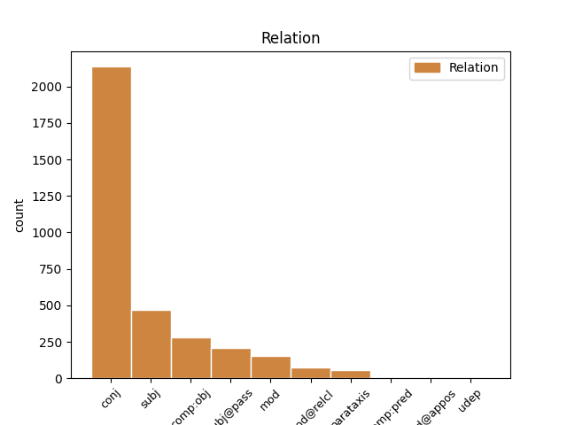
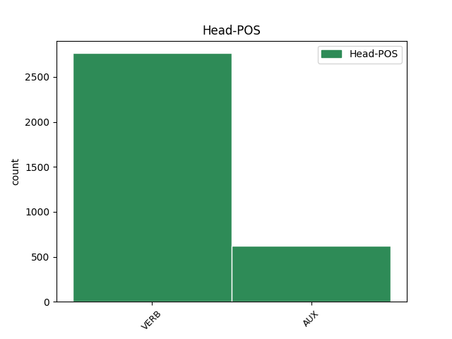
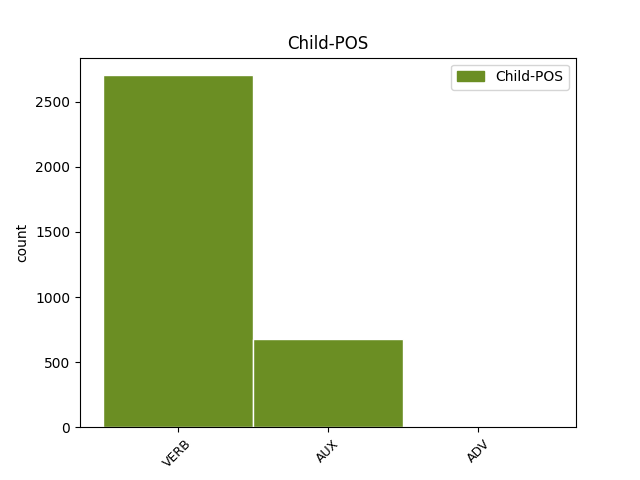

Distribution of features within this leaf



Agreement Rules sorted by frequency.
- When the dependent token is the conjunct(conj) of the head token, and the dependent token is VERB.
1 si _ _ _ _ 0 _ _ _
2 autem _ _ _ _ 0 _ _ _
3 secundum _ _ _ _ 0 _ _ _
4 aliquid _ _ _ _ 0 _ _ _
5 sui _ _ _ _ 0 _ _ _
6 sit _ _ _ _ 0 _ _ _
7 forma _ _ _ _ 0 _ _ _
8 , _ _ _ _ 0 _ _ _
9 id _ _ _ _ 0 _ _ _
10 quod _ _ _ _ 0 _ _ _
11 est _ _ _ _ 0 _ _ _
12 forma _ _ _ _ 0 _ _ _
13 dicimus dico VERB N3|modA|tem1|gen7 Mood=Ind|Number=Plur|Person=1|Tense=Pres|VerbForm=Fin|Voice=Act 0 _ _ _
14 animam _ _ _ _ 0 _ _ _
15 , _ _ _ _ 0 _ _ _
16 et _ _ _ _ 0 _ _ _
17 id _ _ _ _ 0 _ _ _
18 cuius _ _ _ _ 0 _ _ _
19 est _ _ _ _ 0 _ _ _
20 forma _ _ _ _ 0 _ _ _
21 dicimus dico VERB N3|modA|tem1|gen7 Mood=Ind|Number=Plur|Person=1|Tense=Pres|VerbForm=Fin|Voice=Act 13 conj _ _
22 primum _ _ _ _ 0 _ _ _
23 animatum _ _ _ _ 0 _ _ _
24 , _ _ _ _ 0 _ _ _
25 ut _ _ _ _ 0 _ _ _
26 supra _ _ _ _ 0 _ _ _
27 dictum _ _ _ _ 0 _ _ _
28 est _ _ _ _ 0 _ _ _
29 . _ _ _ _ 0 _ _ _
1 cum _ _ _ _ 0 _ _ _
2 enim _ _ _ _ 0 _ _ _
3 forma _ _ _ _ 0 _ _ _
4 sit sum AUX N3|modB|tem1|gen6 Mood=Sub|Number=Sing|Person=3|Tense=Pres|VerbForm=Fin|Voice=Act 0 _ _ _
5 actus _ _ _ _ 0 _ _ _
6 , _ _ _ _ 0 _ _ _
7 materia _ _ _ _ 0 _ _ _
8 vero _ _ _ _ 0 _ _ _
9 sit sum AUX N3|modB|tem1|gen6 Mood=Sub|Number=Sing|Person=3|Tense=Pres|VerbForm=Fin|Voice=Act 4 conj _ _
10 ens _ _ _ _ 0 _ _ _
11 in _ _ _ _ 0 _ _ _
12 potentia _ _ _ _ 0 _ _ _
13 tantum _ _ _ _ 0 _ _ _
14 ; _ _ _ _ 0 _ _ _
15 nullo _ _ _ _ 0 _ _ _
16 modo _ _ _ _ 0 _ _ _
17 id _ _ _ _ 0 _ _ _
18 quod _ _ _ _ 0 _ _ _
19 est _ _ _ _ 0 _ _ _
20 ex _ _ _ _ 0 _ _ _
21 materia _ _ _ _ 0 _ _ _
22 et _ _ _ _ 0 _ _ _
23 forma _ _ _ _ 0 _ _ _
24 compositum _ _ _ _ 0 _ _ _
25 , _ _ _ _ 0 _ _ _
26 potest _ _ _ _ 0 _ _ _
27 esse _ _ _ _ 0 _ _ _
28 alterius _ _ _ _ 0 _ _ _
29 forma _ _ _ _ 0 _ _ _
30 secundum _ _ _ _ 0 _ _ _
31 se _ _ _ _ 0 _ _ _
32 totum _ _ _ _ 0 _ _ _
33 . _ _ _ _ 0 _ _ _
1 illud _ _ _ _ 0 _ _ _
2 enim _ _ _ _ 0 _ _ _
3 quo _ _ _ _ 0 _ _ _
4 primo _ _ _ _ 0 _ _ _
5 aliquid _ _ _ _ 0 _ _ _
6 operatur _ _ _ _ 0 _ _ _
7 , _ _ _ _ 0 _ _ _
8 est _ _ _ _ 0 _ _ _
9 forma _ _ _ _ 0 _ _ _
10 eius _ _ _ _ 0 _ _ _
11 cui _ _ _ _ 0 _ _ _
12 operatio _ _ _ _ 0 _ _ _
13 attribuitur _ _ _ _ 0 _ _ _
14 , _ _ _ _ 0 _ _ _
15 sicut _ _ _ _ 0 _ _ _
16 quo _ _ _ _ 0 _ _ _
17 primo _ _ _ _ 0 _ _ _
18 sanatur _ _ _ _ 0 _ _ _
19 corpus _ _ _ _ 0 _ _ _
20 , _ _ _ _ 0 _ _ _
21 est _ _ _ _ 0 _ _ _
22 sanitas _ _ _ _ 0 _ _ _
23 , _ _ _ _ 0 _ _ _
24 et _ _ _ _ 0 _ _ _
25 quo _ _ _ _ 0 _ _ _
26 primo _ _ _ _ 0 _ _ _
27 scit scio VERB M3|modA|tem1|gen6 Mood=Ind|Number=Sing|Person=3|Tense=Pres|VerbForm=Fin|Voice=Act 30 subj _ _
28 anima _ _ _ _ 0 _ _ _
29 , _ _ _ _ 0 _ _ _
30 est sum AUX N3|modA|tem1|gen6 Mood=Ind|Number=Sing|Person=3|Tense=Pres|VerbForm=Fin|Voice=Act 0 _ _ _
31 scientia _ _ _ _ 0 _ _ _
32 ; _ _ _ _ 0 _ _ _
1 respondeo _ _ _ _ 0 _ _ _
2 dicendum _ _ _ _ 0 _ _ _
3 quod _ _ _ _ 0 _ _ _
4 illud _ _ _ _ 0 _ _ _
5 quo _ _ _ _ 0 _ _ _
6 intellectus _ _ _ _ 0 _ _ _
7 intelligit _ _ _ _ 0 _ _ _
8 , _ _ _ _ 0 _ _ _
9 comparatur _ _ _ _ 0 _ _ _
10 ad _ _ _ _ 0 _ _ _
11 intellectum _ _ _ _ 0 _ _ _
12 intelligentem _ _ _ _ 0 _ _ _
13 ut _ _ _ _ 0 _ _ _
14 forma _ _ _ _ 0 _ _ _
15 eius _ _ _ _ 0 _ _ _
16 , _ _ _ _ 0 _ _ _
17 quia _ _ _ _ 0 _ _ _
18 forma _ _ _ _ 0 _ _ _
19 est sum VERB N3|modA|tem1|gen6 Mood=Ind|Number=Sing|Person=3|Tense=Pres|VerbForm=Fin|Voice=Act 0 _ _ _
20 quo _ _ _ _ 0 _ _ _
21 agens _ _ _ _ 0 _ _ _
22 agit ago VERB L3|modA|tem1|gen6 Mood=Ind|Number=Sing|Person=3|Tense=Pres|VerbForm=Fin|Voice=Act 19 comp:obj _ SpaceAfter=No
23 . _ _ _ _ 0 _ _ _
1 unde _ _ _ _ 0 _ _ _
2 quod _ _ _ _ 0 _ _ _
3 per _ _ _ _ 0 _ _ _
4 se _ _ _ _ 0 _ _ _
5 habet _ _ _ _ 0 _ _ _
6 esse _ _ _ _ 0 _ _ _
7 , _ _ _ _ 0 _ _ _
8 non _ _ _ _ 0 _ _ _
9 potest _ _ _ _ 0 _ _ _
10 generari _ _ _ _ 0 _ _ _
11 vel _ _ _ _ 0 _ _ _
12 corrumpi _ _ _ _ 0 _ _ _
13 nisi _ _ _ _ 0 _ _ _
14 per _ _ _ _ 0 _ _ _
15 se _ _ _ _ 0 _ _ _
16 , _ _ _ _ 0 _ _ _
17 quae _ _ _ _ 0 _ _ _
18 vero _ _ _ _ 0 _ _ _
19 non _ _ _ _ 0 _ _ _
20 subsistunt subsisto VERB L3|modA|tem1|gen9 Mood=Ind|Number=Plur|Person=3|Tense=Pres|VerbForm=Fin|Voice=Act 28 subj@pass _ SpaceAfter=No
21 , _ _ _ _ 0 _ _ _
22 ut _ _ _ _ 0 _ _ _
23 accidentia _ _ _ _ 0 _ _ _
24 et _ _ _ _ 0 _ _ _
25 formae _ _ _ _ 0 _ _ _
26 materiales _ _ _ _ 0 _ _ _
27 , _ _ _ _ 0 _ _ _
28 dicuntur dico VERB N3|modJ|tem1|gen9 Mood=Ind|Number=Plur|Person=3|Tense=Pres|VerbForm=Fin|Voice=Pass 0 _ _ _
29 fieri _ _ _ _ 0 _ _ _
30 et _ _ _ _ 0 _ _ _
31 corrumpi _ _ _ _ 0 _ _ _
32 per _ _ _ _ 0 _ _ _
33 generationem _ _ _ _ 0 _ _ _
34 et _ _ _ _ 0 _ _ _
35 corruptionem _ _ _ _ 0 _ _ _
36 compositorum _ _ _ _ 0 _ _ _
37 . _ _ _ _ 0 _ _ _
1 hoc _ _ _ _ 0 _ _ _
2 ergo _ _ _ _ 0 _ _ _
3 principium _ _ _ _ 0 _ _ _
4 quo _ _ _ _ 0 _ _ _
5 primo _ _ _ _ 0 _ _ _
6 intelligimus _ _ _ _ 0 _ _ _
7 , _ _ _ _ 0 _ _ _
8 sive _ _ _ _ 0 _ _ _
9 dicatur dico VERB N3|modK|tem1|gen6 Mood=Sub|Number=Sing|Person=3|Tense=Pres|VerbForm=Fin|Voice=Pass 15 mod _ _
10 intellectus _ _ _ _ 0 _ _ _
11 sive _ _ _ _ 0 _ _ _
12 anima _ _ _ _ 0 _ _ _
13 intellectiva _ _ _ _ 0 _ _ _
14 , _ _ _ _ 0 _ _ _
15 est sum AUX N3|modA|tem1|gen6 Mood=Ind|Number=Sing|Person=3|Tense=Pres|VerbForm=Fin|Voice=Act 0 _ _ _
16 forma _ _ _ _ 0 _ _ _
17 corporis _ _ _ _ 0 _ _ _
18 . _ _ _ _ 0 _ _ _
1 primo _ _ _ _ 0 _ _ _
2 quidem _ _ _ _ 0 _ _ _
3 , _ _ _ _ 0 _ _ _
4 quia _ _ _ _ 0 _ _ _
5 nulla _ _ _ _ 0 _ _ _
6 forma _ _ _ _ 0 _ _ _
7 substantialis _ _ _ _ 0 _ _ _
8 est _ _ _ _ 0 _ _ _
9 per _ _ _ _ 0 _ _ _
10 se _ _ _ _ 0 _ _ _
11 sensibilis _ _ _ _ 0 _ _ _
12 , _ _ _ _ 0 _ _ _
13 quia _ _ _ _ 0 _ _ _
14 quod _ _ _ _ 0 _ _ _
15 quid _ _ _ _ 0 _ _ _
16 est sum AUX N3|modA|tem1|gen6 Mood=Ind|Number=Sing|Person=3|Tense=Pres|VerbForm=Fin|Voice=Act 17 subj _ _
17 est sum AUX N3|modA|tem1|gen6 Mood=Ind|Number=Sing|Person=3|Tense=Pres|VerbForm=Fin|Voice=Act 0 _ _ _
18 obiectum _ _ _ _ 0 _ _ _
19 intellectus _ _ _ _ 0 _ _ _
20 , _ _ _ _ 0 _ _ _
21 ut _ _ _ _ 0 _ _ _
22 dicitur _ _ _ _ 0 _ _ _
23 in _ _ _ _ 0 _ _ _
24 iii _ _ _ _ 0 _ _ _
25 de _ _ _ _ 0 _ _ _
26 anima _ _ _ _ 0 _ _ _
27 . _ _ _ _ 0 _ _ _
1 et _ _ _ _ 0 _ _ _
2 secundum _ _ _ _ 0 _ _ _
3 ordinem _ _ _ _ 0 _ _ _
4 formarum _ _ _ _ 0 _ _ _
5 ponebant _ _ _ _ 0 _ _ _
6 platonici _ _ _ _ 0 _ _ _
7 ordinem _ _ _ _ 0 _ _ _
8 substantiarum _ _ _ _ 0 _ _ _
9 separatarum _ _ _ _ 0 _ _ _
10 , _ _ _ _ 0 _ _ _
11 puta _ _ _ _ 0 _ _ _
12 quod _ _ _ _ 0 _ _ _
13 una _ _ _ _ 0 _ _ _
14 substantia _ _ _ _ 0 _ _ _
15 separata _ _ _ _ 0 _ _ _
16 est sum VERB N3|modA|tem1|gen6 Mood=Ind|Number=Sing|Person=3|Tense=Pres|VerbForm=Fin|Voice=Act 0 _ _ _
17 quae _ _ _ _ 0 _ _ _
18 est sum AUX N3|modA|tem1|gen6 Mood=Ind|Number=Sing|Person=3|Tense=Pres|VerbForm=Fin|Voice=Act 16 comp:obj _ _
19 equus _ _ _ _ 0 _ _ _
20 , _ _ _ _ 0 _ _ _
21 quae _ _ _ _ 0 _ _ _
22 est _ _ _ _ 0 _ _ _
23 causa _ _ _ _ 0 _ _ _
24 omnium _ _ _ _ 0 _ _ _
25 equorum _ _ _ _ 0 _ _ _
26 ; _ _ _ _ 0 _ _ _
1 secundo _ _ _ _ 0 _ _ _
2 , _ _ _ _ 0 _ _ _
3 supposito _ _ _ _ 0 _ _ _
4 quod _ _ _ _ 0 _ _ _
5 angelus _ _ _ _ 0 _ _ _
6 sit _ _ _ _ 0 _ _ _
7 talis _ _ _ _ 0 _ _ _
8 , _ _ _ _ 0 _ _ _
9 quaeritur quaero VERB L3|modJ|tem1|gen6 Mood=Ind|Number=Sing|Person=3|Tense=Pres|VerbForm=Fin|Voice=Pass 0 _ _ _
10 utrum _ _ _ _ 0 _ _ _
11 angelus _ _ _ _ 0 _ _ _
12 sit sum AUX N3|modB|tem1|gen6 Mood=Sub|Number=Sing|Person=3|Tense=Pres|VerbForm=Fin|Voice=Act 9 subj@pass _ _
13 compositus _ _ _ _ 0 _ _ _
14 ex _ _ _ _ 0 _ _ _
15 materia _ _ _ _ 0 _ _ _
16 et _ _ _ _ 0 _ _ _
17 forma _ _ _ _ 0 _ _ _
18 . _ _ _ _ 0 _ _ _
1 praeterea _ _ _ _ 0 _ _ _
2 , _ _ _ _ 0 _ _ _
3 id _ _ _ _ 0 _ _ _
4 quod _ _ _ _ 0 _ _ _
5 per _ _ _ _ 0 _ _ _
6 se _ _ _ _ 0 _ _ _
7 habet _ _ _ _ 0 _ _ _
8 esse _ _ _ _ 0 _ _ _
9 , _ _ _ _ 0 _ _ _
10 non _ _ _ _ 0 _ _ _
11 unitur _ _ _ _ 0 _ _ _
12 corpori _ _ _ _ 0 _ _ _
13 ut _ _ _ _ 0 _ _ _
14 forma _ _ _ _ 0 _ _ _
15 , _ _ _ _ 0 _ _ _
16 quia _ _ _ _ 0 _ _ _
17 forma _ _ _ _ 0 _ _ _
18 est sum VERB N3|modA|tem1|gen6 Mood=Ind|Number=Sing|Person=3|Tense=Pres|VerbForm=Fin|Voice=Act 0 _ _ _
19 quo _ _ _ _ 0 _ _ _
20 aliquid _ _ _ _ 0 _ _ _
21 est sum VERB N3|modA|tem1|gen6 Mood=Ind|Number=Sing|Person=3|Tense=Pres|VerbForm=Fin|Voice=Act 18 mod@relcl _ SpaceAfter=No
22 ; _ _ _ _ 0 _ _ _
1 secundum _ _ _ _ 0 _ _ _
2 hoc _ _ _ _ 0 _ _ _
3 ergo _ _ _ _ 0 _ _ _
4 , _ _ _ _ 0 _ _ _
5 dicitur _ _ _ _ 0 _ _ _
6 terra _ _ _ _ 0 _ _ _
7 inanis _ _ _ _ 0 _ _ _
8 et _ _ _ _ 0 _ _ _
9 vacua _ _ _ _ 0 _ _ _
10 , _ _ _ _ 0 _ _ _
11 vel _ _ _ _ 0 _ _ _
12 invisibilis _ _ _ _ 0 _ _ _
13 et _ _ _ _ 0 _ _ _
14 incomposita _ _ _ _ 0 _ _ _
15 , _ _ _ _ 0 _ _ _
16 quia _ _ _ _ 0 _ _ _
17 materia _ _ _ _ 0 _ _ _
18 per _ _ _ _ 0 _ _ _
19 formam _ _ _ _ 0 _ _ _
20 cognoscitur _ _ _ _ 0 _ _ _
21 ( _ _ _ _ 0 _ _ _
22 unde _ _ _ _ 0 _ _ _
23 in _ _ _ _ 0 _ _ _
24 se _ _ _ _ 0 _ _ _
25 considerata _ _ _ _ 0 _ _ _
26 dicitur _ _ _ _ 0 _ _ _
27 invisibilis _ _ _ _ 0 _ _ _
28 vel _ _ _ _ 0 _ _ _
29 inanis _ _ _ _ 0 _ _ _
30 ) _ _ _ _ 0 _ _ _
31 , _ _ _ _ 0 _ _ _
32 et _ _ _ _ 0 _ _ _
33 eius _ _ _ _ 0 _ _ _
34 potentia _ _ _ _ 0 _ _ _
35 per _ _ _ _ 0 _ _ _
36 formam _ _ _ _ 0 _ _ _
37 repletur repleo VERB K3|modJ|tem1|gen6 Mood=Ind|Number=Sing|Person=3|Tense=Pres|VerbForm=Fin|Voice=Pass 0 _ _ _
38 ( _ _ _ _ 0 _ _ _
39 unde _ _ _ _ 0 _ _ _
40 et _ _ _ _ 0 _ _ _
41 plato _ _ _ _ 0 _ _ _
42 materiam _ _ _ _ 0 _ _ _
43 dicit dico VERB N3|modA|tem1|gen6 Mood=Ind|Number=Sing|Person=3|Tense=Pres|VerbForm=Fin|Voice=Act 37 parataxis _ _
44 esse _ _ _ _ 0 _ _ _
45 locum _ _ _ _ 0 _ _ _
46 ) _ _ _ _ 0 _ _ _
47 . _ _ _ _ 0 _ _ _
1 unde _ _ _ _ 0 _ _ _
2 quantumcumque _ _ _ _ 0 _ _ _
3 sit sum AUX N3|modB|tem1|gen6 Mood=Sub|Number=Sing|Person=3|Tense=Pres|VerbForm=Fin|Voice=Act 9 mod _ _
4 potens _ _ _ _ 0 _ _ _
5 intellectus _ _ _ _ 0 _ _ _
6 angelicus _ _ _ _ 0 _ _ _
7 , _ _ _ _ 0 _ _ _
8 non _ _ _ _ 0 _ _ _
9 posset possum VERB N3|modB|tem2|gen6 Aspect=Imp|Mood=Sub|Number=Sing|Person=3|Tense=Imp|VerbForm=Fin|VerbType=Mod|Voice=Act 0 _ _ _
10 formas _ _ _ _ 0 _ _ _
11 materiales _ _ _ _ 0 _ _ _
12 reducere _ _ _ _ 0 _ _ _
13 ad _ _ _ _ 0 _ _ _
14 esse _ _ _ _ 0 _ _ _
15 intelligibile _ _ _ _ 0 _ _ _
16 , _ _ _ _ 0 _ _ _
17 nisi _ _ _ _ 0 _ _ _
18 prius _ _ _ _ 0 _ _ _
19 reduceret _ _ _ _ 0 _ _ _
20 eas _ _ _ _ 0 _ _ _
21 ad _ _ _ _ 0 _ _ _
22 esse _ _ _ _ 0 _ _ _
23 formarum _ _ _ _ 0 _ _ _
24 imaginatarum _ _ _ _ 0 _ _ _
25 . _ _ _ _ 0 _ _ _
1 praeterea _ _ _ _ 0 _ _ _
2 , _ _ _ _ 0 _ _ _
3 inter _ _ _ _ 0 _ _ _
4 personam _ _ _ _ 0 _ _ _
5 et _ _ _ _ 0 _ _ _
6 naturam _ _ _ _ 0 _ _ _
7 non _ _ _ _ 0 _ _ _
8 cadit _ _ _ _ 0 _ _ _
9 aliquid _ _ _ _ 0 _ _ _
10 accidens _ _ _ _ 0 _ _ _
11 medium _ _ _ _ 0 _ _ _
12 , _ _ _ _ 0 _ _ _
13 sicut _ _ _ _ 0 _ _ _
14 nec _ _ _ _ 0 _ _ _
15 inter _ _ _ _ 0 _ _ _
16 materiam _ _ _ _ 0 _ _ _
17 et _ _ _ _ 0 _ _ _
18 formam _ _ _ _ 0 _ _ _
19 : _ _ _ _ 0 _ _ _
20 quia _ _ _ _ 0 _ _ _
21 secundum _ _ _ _ 0 _ _ _
22 formam _ _ _ _ 0 _ _ _
23 substantialem _ _ _ _ 0 _ _ _
24 et _ _ _ _ 0 _ _ _
25 materiam _ _ _ _ 0 _ _ _
26 est sum VERB N3|modA|tem1|gen6 Mood=Ind|Number=Sing|Person=3|Tense=Pres|VerbForm=Fin|Voice=Act 0 _ _ _
27 esse _ _ _ _ 0 _ _ _
28 substantiale _ _ _ _ 0 _ _ _
29 , _ _ _ _ 0 _ _ _
30 quo _ _ _ _ 0 _ _ _
31 non _ _ _ _ 0 _ _ _
32 est sum AUX N3|modA|tem1|gen6 Mood=Ind|Number=Sing|Person=3|Tense=Pres|VerbForm=Fin|Voice=Act 26 mod@relcl _ _
33 prius _ _ _ _ 0 _ _ _
34 aliquid _ _ _ _ 0 _ _ _
35 esse _ _ _ _ 0 _ _ _
36 accidentale _ _ _ _ 0 _ _ _
37 . _ _ _ _ 0 _ _ _
1 praeterea _ _ _ _ 0 _ _ _
2 , _ _ _ _ 0 _ _ _
3 quaecumque _ _ _ _ 0 _ _ _
4 potentia _ _ _ _ 0 _ _ _
5 receptiva _ _ _ _ 0 _ _ _
6 est sum AUX N3|modA|tem1|gen6 Mood=Ind|Number=Sing|Person=3|Tense=Pres|VerbForm=Fin|Voice=Act 11 parataxis _ _
7 actus _ _ _ _ 0 _ _ _
8 alicuius _ _ _ _ 0 _ _ _
9 corporis _ _ _ _ 0 _ _ _
10 , _ _ _ _ 0 _ _ _
11 recipit recipio VERB L3|modA|tem1|gen6 Mood=Ind|Number=Sing|Person=3|Tense=Pres|VerbForm=Fin|Voice=Act 0 _ _ _
12 formam _ _ _ _ 0 _ _ _
13 materialiter _ _ _ _ 0 _ _ _
14 et _ _ _ _ 0 _ _ _
15 individualiter _ _ _ _ 0 _ _ _
16 , _ _ _ _ 0 _ _ _
17 quia _ _ _ _ 0 _ _ _
18 receptum _ _ _ _ 0 _ _ _
19 est _ _ _ _ 0 _ _ _
20 in _ _ _ _ 0 _ _ _
21 recipiente _ _ _ _ 0 _ _ _
22 secundum _ _ _ _ 0 _ _ _
23 modum _ _ _ _ 0 _ _ _
24 recipientis _ _ _ _ 0 _ _ _
25 . _ _ _ _ 0 _ _ _
1 et _ _ _ _ 0 _ _ _
2 hoc _ _ _ _ 0 _ _ _
3 est _ _ _ _ 0 _ _ _
4 quod _ _ _ _ 0 _ _ _
5 participat _ _ _ _ 0 _ _ _
6 formam _ _ _ _ 0 _ _ _
7 humanae _ _ _ _ 0 _ _ _
8 naturae _ _ _ _ 0 _ _ _
9 ; _ _ _ _ 0 _ _ _
10 sicut _ _ _ _ 0 _ _ _
11 verum _ _ _ _ 0 _ _ _
12 aurum _ _ _ _ 0 _ _ _
13 dicitur dico VERB N3|modJ|tem1|gen6 Mood=Ind|Number=Sing|Person=3|Tense=Pres|VerbForm=Fin|Voice=Pass 0 _ _ _
14 quod _ _ _ _ 0 _ _ _
15 habet habeo VERB K3|modA|tem1|gen6 Mood=Ind|Number=Sing|Person=3|Tense=Pres|VerbForm=Fin|Voice=Act 13 comp:pred _ _
16 veram _ _ _ _ 0 _ _ _
17 formam _ _ _ _ 0 _ _ _
18 auri _ _ _ _ 0 _ _ _
19 , _ _ _ _ 0 _ _ _
20 ex _ _ _ _ 0 _ _ _
21 qua _ _ _ _ 0 _ _ _
22 est _ _ _ _ 0 _ _ _
23 proprium _ _ _ _ 0 _ _ _
24 esse _ _ _ _ 0 _ _ _
25 auri _ _ _ _ 0 _ _ _
26 . _ _ _ _ 0 _ _ _
1 unde _ _ _ _ 0 _ _ _
2 et _ _ _ _ 0 _ _ _
3 aristoteles _ _ _ _ 0 _ _ _
4 dicit _ _ _ _ 0 _ _ _
5 , _ _ _ _ 0 _ _ _
6 in _ _ _ _ 0 _ _ _
7 ii _ _ _ _ 0 _ _ _
8 de _ _ _ _ 0 _ _ _
9 anima _ _ _ _ 0 _ _ _
10 , _ _ _ _ 0 _ _ _
11 quod _ _ _ _ 0 _ _ _
12 semen _ _ _ _ 0 _ _ _
13 et _ _ _ _ 0 _ _ _
14 fructus _ _ _ _ 0 _ _ _
15 sic _ _ _ _ 0 _ _ _
16 sunt _ _ _ _ 0 _ _ _
17 potentia _ _ _ _ 0 _ _ _
18 vitam _ _ _ _ 0 _ _ _
19 habentia _ _ _ _ 0 _ _ _
20 quod _ _ _ _ 0 _ _ _
21 abiiciunt abjicio VERB L3|modA|tem1|gen9|vgr2 Mood=Ind|Number=Plur|Person=3|Tense=Pres|VerbForm=Fin|Voice=Act 0 _ _ _
22 animam _ _ _ _ 0 _ _ _
23 , _ _ _ _ 0 _ _ _
24 idest _ _ _ _ 0 _ _ _
25 anima _ _ _ _ 0 _ _ _
26 carent careo VERB K3|modA|tem1|gen9 Mood=Ind|Number=Plur|Person=3|Tense=Pres|VerbForm=Fin|Voice=Act 21 mod@appos _ SpaceAfter=No
27 : _ _ _ _ 0 _ _ _
28 cum _ _ _ _ 0 _ _ _
29 tamen _ _ _ _ 0 _ _ _
30 id _ _ _ _ 0 _ _ _
31 cuius _ _ _ _ 0 _ _ _
32 anima _ _ _ _ 0 _ _ _
33 est _ _ _ _ 0 _ _ _
34 actus _ _ _ _ 0 _ _ _
35 , _ _ _ _ 0 _ _ _
36 sit _ _ _ _ 0 _ _ _
37 potentia _ _ _ _ 0 _ _ _
38 vitam _ _ _ _ 0 _ _ _
39 habens _ _ _ _ 0 _ _ _
40 , _ _ _ _ 0 _ _ _
41 non _ _ _ _ 0 _ _ _
42 tamen _ _ _ _ 0 _ _ _
43 abiiciens _ _ _ _ 0 _ _ _
44 animam _ _ _ _ 0 _ _ _
45 . _ _ _ _ 0 _ _ _
1 quae _ _ _ _ 0 _ _ _
2 quidem _ _ _ _ 0 _ _ _
3 ratio _ _ _ _ 0 _ _ _
4 quam _ _ _ _ 0 _ _ _
5 frivola _ _ _ _ 0 _ _ _
6 sit sum AUX N3|modB|tem1|gen6 Mood=Sub|Number=Sing|Person=3|Tense=Pres|VerbForm=Fin|Voice=Act 8 comp:pred _ SpaceAfter=No
7 , _ _ _ _ 0 _ _ _
8 apparet appareo VERB K3|modA|tem1|gen6 Mood=Ind|Number=Sing|Person=3|Tense=Pres|VerbForm=Fin|Voice=Act 0 _ _ _
9 . _ _ _ _ 0 _ _ _
Disagree Examples:
1 praemittit _ _ _ _ 0 _ _ _
2 namque _ _ _ _ 0 _ _ _
3 primae _ _ _ _ 0 _ _ _
4 operationis _ _ _ _ 0 _ _ _
5 meditationem _ _ _ _ 0 _ _ _
6 , _ _ _ _ 0 _ _ _
7 cum _ _ _ _ 0 _ _ _
8 dicit dico VERB N3|modA|tem1|gen6 Mood=Ind|Number=Sing|Person=3|Tense=Pres|VerbForm=Fin|Voice=Act 0 _ _ _
9 , _ _ _ _ 0 _ _ _
10 meditatus _ _ _ _ 0 _ _ _
11 sum sum AUX N3|modA|tem1|gen4 Mood=Ind|Number=Sing|Person=1|Tense=Pres|VerbForm=Fin|Voice=Act 8 comp:obj _ _
12 in _ _ _ _ 0 _ _ _
13 omnibus _ _ _ _ 0 _ _ _
14 operibus _ _ _ _ 0 _ _ _
15 tuis _ _ _ _ 0 _ _ _
16 : _ _ _ _ 0 _ _ _
17 ut _ _ _ _ 0 _ _ _
18 operatio _ _ _ _ 0 _ _ _
19 ad _ _ _ _ 0 _ _ _
20 divinum _ _ _ _ 0 _ _ _
21 intelligere _ _ _ _ 0 _ _ _
22 et _ _ _ _ 0 _ _ _
23 velle _ _ _ _ 0 _ _ _
24 referatur _ _ _ _ 0 _ _ _
25 . _ _ _ _ 0 _ _ _
1 subiungit _ _ _ _ 0 _ _ _
2 vero _ _ _ _ 0 _ _ _
3 de _ _ _ _ 0 _ _ _
4 factionis _ _ _ _ 0 _ _ _
5 meditatione _ _ _ _ 0 _ _ _
6 , _ _ _ _ 0 _ _ _
7 cum _ _ _ _ 0 _ _ _
8 dicit dico VERB N3|modA|tem1|gen6 Mood=Ind|Number=Sing|Person=3|Tense=Pres|VerbForm=Fin|Voice=Act 0 _ _ _
9 , _ _ _ _ 0 _ _ _
10 et _ _ _ _ 0 _ _ _
11 in _ _ _ _ 0 _ _ _
12 factis _ _ _ _ 0 _ _ _
13 manuum _ _ _ _ 0 _ _ _
14 tuarum _ _ _ _ 0 _ _ _
15 meditabar meditor VERB J3|modJ|tem2|gen4 Aspect=Imp|Mood=Ind|Number=Sing|Person=1|Tense=Imp|VerbForm=Fin|Voice=Pass 8 comp:obj _ SpaceAfter=No
16 : _ _ _ _ 0 _ _ _
17 ut _ _ _ _ 0 _ _ _
18 per _ _ _ _ 0 _ _ _
19 facta _ _ _ _ 0 _ _ _
20 manuum _ _ _ _ 0 _ _ _
21 ipsius _ _ _ _ 0 _ _ _
22 intelligamus _ _ _ _ 0 _ _ _
23 caelum _ _ _ _ 0 _ _ _
24 et _ _ _ _ 0 _ _ _
25 terram _ _ _ _ 0 _ _ _
26 , _ _ _ _ 0 _ _ _
27 et _ _ _ _ 0 _ _ _
28 omnia _ _ _ _ 0 _ _ _
29 quae _ _ _ _ 0 _ _ _
30 procedunt _ _ _ _ 0 _ _ _
31 in _ _ _ _ 0 _ _ _
32 esse _ _ _ _ 0 _ _ _
33 a _ _ _ _ 0 _ _ _
34 deo _ _ _ _ 0 _ _ _
35 sicut _ _ _ _ 0 _ _ _
36 ab _ _ _ _ 0 _ _ _
37 artifice _ _ _ _ 0 _ _ _
38 manufacta _ _ _ _ 0 _ _ _
39 procedunt _ _ _ _ 0 _ _ _
40 . _ _ _ _ 0 _ _ _
1 unde _ _ _ _ 0 _ _ _
2 , _ _ _ _ 0 _ _ _
3 cum _ _ _ _ 0 _ _ _
4 psalmus _ _ _ _ 0 _ _ _
5 diceret _ _ _ _ 0 _ _ _
6 , _ _ _ _ 0 _ _ _
7 mirabilis _ _ _ _ 0 _ _ _
8 facta _ _ _ _ 0 _ _ _
9 est _ _ _ _ 0 _ _ _
10 scientia _ _ _ _ 0 _ _ _
11 tua _ _ _ _ 0 _ _ _
12 ex _ _ _ _ 0 _ _ _
13 me _ _ _ _ 0 _ _ _
14 : _ _ _ _ 0 _ _ _
15 confortata _ _ _ _ 0 _ _ _
16 est sum AUX N3|modA|tem1|gen6 Mood=Ind|Number=Sing|Person=3|Tense=Pres|VerbForm=Fin|Voice=Act 0 _ _ _
17 , _ _ _ _ 0 _ _ _
18 et _ _ _ _ 0 _ _ _
19 non _ _ _ _ 0 _ _ _
20 potero possum VERB N3|modA|tem3|gen4 Mood=Ind|Number=Sing|Person=1|Tense=Fut|VerbForm=Fin|VerbType=Mod|Voice=Act 16 conj _ _
21 ad _ _ _ _ 0 _ _ _
22 eam _ _ _ _ 0 _ _ _
23 : _ _ _ _ 0 _ _ _
24 et _ _ _ _ 0 _ _ _
25 adiungeret _ _ _ _ 0 _ _ _
26 divinae _ _ _ _ 0 _ _ _
27 illuminationis _ _ _ _ 0 _ _ _
28 auxilium _ _ _ _ 0 _ _ _
29 cum _ _ _ _ 0 _ _ _
30 dicit _ _ _ _ 0 _ _ _
31 . _ _ _ _ 0 _ _ _
1 delectasti delecto VERB J3|modA|tem4|gen5 Aspect=Perf|Mood=Ind|Number=Sing|Person=2|Tense=Past|VerbForm=Fin|Voice=Act 0 _ _ _
2 me _ _ _ _ 0 _ _ _
3 , _ _ _ _ 0 _ _ _
4 domine _ _ _ _ 0 _ _ _
5 , _ _ _ _ 0 _ _ _
6 in _ _ _ _ 0 _ _ _
7 factura _ _ _ _ 0 _ _ _
8 tua _ _ _ _ 0 _ _ _
9 , _ _ _ _ 0 _ _ _
10 et _ _ _ _ 0 _ _ _
11 in _ _ _ _ 0 _ _ _
12 operibus _ _ _ _ 0 _ _ _
13 manuum _ _ _ _ 0 _ _ _
14 tuarum _ _ _ _ 0 _ _ _
15 exsultabo exsulto VERB J3|modA|tem3|gen4|vgr1 Mood=Ind|Number=Sing|Person=1|Tense=Fut|VerbForm=Fin|Voice=Act 1 conj _ SpaceAfter=No
16 . _ _ _ _ 0 _ _ _
1 inebriabuntur inebrio VERB J3|modJ|tem3|gen9 Mood=Ind|Number=Plur|Person=3|Tense=Fut|VerbForm=Fin|Voice=Pass 0 _ _ _
2 ab _ _ _ _ 0 _ _ _
3 ubertate _ _ _ _ 0 _ _ _
4 domus _ _ _ _ 0 _ _ _
5 tuae _ _ _ _ 0 _ _ _
6 , _ _ _ _ 0 _ _ _
7 quasi _ _ _ _ 0 _ _ _
8 totius _ _ _ _ 0 _ _ _
9 creaturae _ _ _ _ 0 _ _ _
10 , _ _ _ _ 0 _ _ _
11 et _ _ _ _ 0 _ _ _
12 sicut _ _ _ _ 0 _ _ _
13 torrente _ _ _ _ 0 _ _ _
14 voluptatis _ _ _ _ 0 _ _ _
15 tuae _ _ _ _ 0 _ _ _
16 potabis poto VERB J3|modA|tem3|gen5 Mood=Ind|Number=Sing|Person=2|Tense=Fut|VerbForm=Fin|Voice=Act 1 conj _ _
17 eos _ _ _ _ 0 _ _ _
18 : _ _ _ _ 0 _ _ _
19 quoniam _ _ _ _ 0 _ _ _
20 apud _ _ _ _ 0 _ _ _
21 te _ _ _ _ 0 _ _ _
22 est _ _ _ _ 0 _ _ _
23 fons _ _ _ _ 0 _ _ _
24 vitae _ _ _ _ 0 _ _ _
25 . _ _ _ _ 0 _ _ _